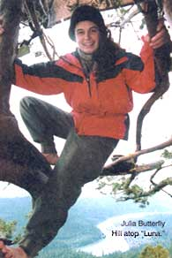
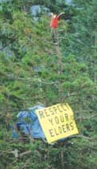
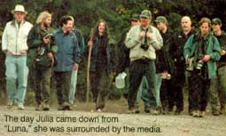
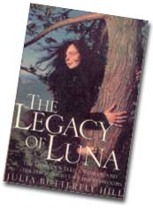

An Interview with Julia "Butterfly" Hill.
On December 10, 1997 Julia "Butterfly" Hill scaled "Luna," a 1,000-year-old California redwood tree that was in danger of being included in a massive clear-cut by Pacific Lumber, a division of the Maxam Corporation. And while "tree sits" have become the norm for environmental activists looking for a drastic way to put an end to clear cuts in old growth forests, Hill's determination has been the object of inspiration for environmentalists and frenzied derision for loggers. For over two years (738 days), Hill did not come down from her 180-foot-high perch. She repelled everything from helicopters to El Nino to personal doubt, and her resilience garnered worldwide attention for the preservation of the planet's endangered wood.
-Kristina Mastrocola
SAM MARTIN FOR MOTHER: You are amazingly busy these days. How are you adjusting to the new life of a public spokesperson?
JULIA BUTTERFLY HILL: Well, nothing has changed since I was in the tree, other than that now I'm going all over the place. I've been a spokesperson for a long time. The only difference is that instead of being able to do it all from one spot, now I have to go around everywhere.
MOTHER: What was a typical February or March day for you and Luna?
JBH: Well, the Februarys and Marches I was up there were completely different. One year was El Nino and one was La Nina. One had excessive amounts of wind and rain and the other excessive amounts of snow. They both bad a lot of sleet and hail.
Julia's home for 738 days was this small treetop tent, subjected to constant wind, rain and snow.
MOTHER: Did you ever get frightened or discouraged because of the weather?
JBH: Well, the first winter frightened me out of my mind - but it wasn't just the weather. I was sitting in an active logging area and the [logging] company was doing everything they could to get me down. I was also going through personal dilemmas, so the first few months were probably the most brutal and difficult of all. After that I started settling in and learning how to just be. And in that process, which a lot of people spend time in Yoga learning how to do, I was able to handle the next winter and the next hardships a little easier. It never got easy, but I certainly learned ways of breezing through the difficulties. And of course, there were many times I felt discouraged and a lot of times where I was crying, thinking I'm one human being, I can't take anymore, I can't do anymore. But then I would look and see the beauty of the forest and I would see the destruction of the forest, and I would remember why I was up there. That kept me going.
MOTHER: There's a passage in your book that I particularly like. It had to do with the first winter, and the wind was blowing so hard that you thought you might get blown off your platform. But you eventually stopped fighting it and decided to bend with the storm and the tree. Did you learn some life lessons when you were up in the tree, and do you use them when you face new challenges?
JBH: Absolutely. But I knew that was going to be my biggest challenge. One time, before I came down, I was holding Luna and crying and praying and asking myself, how will 1 hold this heart center when the world is trying to pull me in a billion different directions? How am I going to hold on to the lessons I've learned from this perspective when I'm no longer in this perspective? It's a beautiful challenge, because in the challenge is a continuation of proving to people that it is possible. This heart center is so deep within me that I know it to be true. And it's not something that a teacher has to teach me or a politician has to tell me is legal or scientist has to tell me it's scientifically possible. It is a truth that I know to the very depth of my core.
MOTHER: Do you look forward to getting back to a more simple, less publicized way of life?
JBH: Well, I am definitely planning to do next year a little differently than I've done this year. I'm learning as I go. One of the things my book doesn't mention is that I have a business background. I graduated high school when I was 16, then I went straight into college and majored in business. I opened my first business when I was 18, sold it when I was 20 and started setting up systems to run other people's businesses for them. I was totally in that world of money and things and money and things. [The problem was] it was never enough. In the tree I realized that the more stuff we have, the more stuff we need to take care of our stuff. I always use the example of a car because a majority of the people in this country, and even in the world, who have cars take better care of them than they do the earth. And yet to have a car you have to have registration, you have to have a license, you have to have fuel in the car, you have to have fluid in the car, you have to have good tires and good belts, and the screws and bolts all have to be tightened down. Before you know it, a huge portion of your time, energy and money goes into taking care of one thing called a car. So I keep my life simple. I have one mug that I bring with me everywhere I go.
MOTHER: Do you support any kind of for estry? Selective logging, for instance?
JBH: I absolutely support sustainable forestry. And the reason is that - I'll use my business background here for a moment - everyone in the business world that you talk to knows that a wise long term investment is one where you put in a strong initial capital, then you only draw off the interest. Now, if you talk to corporations that are in [it] for the short term, they want to extract it all out and move on to the next one. The earth - in a healthy, natural state - is a very strong capital investment. The reality is, we've been blessed to live on a planet that supplies our needs. But in order to meet those needs, we have to take from the earth. That's part of our symbiotic function. If you see any predator species in the wild, they actually play a symbiotic role. When they get out of control, they go extinct. It's the same thing with us as human beings.
MOTHER: What was the deal that prompted you to come out of the tree?
JBH : A deal was struck [with Maxam Corporation] on December 17, 1999 after nearly 10 months of negotiation in which they agreed to just protect Luna. They said, Okay Julia, we'll protect the tree, come down and leave - us alone." And I said, "Well the tree's not going to stand in a clear-cut by itself. You need to protect the buffer around it that I've been physically able to protect by being here." That's when I asked for the 200-foot radius. There is a typo in the book that says 20 feet, but it's 200 feet. It was the amount [of surrounding trees] that I was able to physically protect [by sitting in Luna]. So then they said they wanted $50,000 to protect the zone around it, and I asked them to donate it to their workers because their workers had recently been laid off [due to] their horrific logging practices. They ended up donating it to a college.
MOTHER: It must have been an emotional time for you to touch ground again.
JBH: On December 18 I touched the ground because they'd agreed to protect Luna in that buffer zone forever. Even if governments pass laws, and even if people buy and sell the land, this agreement that we made is basically like a law. The deal is like a conservation easement that runs with the land so no one may ever go in there and cut it again. So no, [coming down] wasn't difficult. In my mind, it wasn't done until it was done. And unfortunately because [the agreement] had been leaked out to the public, everyone was watching. We were going to sign the agreement on the very last minute of the afternoon on that Friday so that it wouldn't go onto public record until Monday. That would have given me the weekend to turn off my phone, turn off my pager and say goodbye. But for some reason they ended up signing it earlier than that and of course the press immediately picked up on it and people were going crazy. I mean, it was a really intense time. I had to come down the very next morning.
MOTHER: What do you mean "people were going crazy?"
JBH: Well, because of what I've done while I was in the tree, part of the world wanted me to stay up there forever until all of the world's forests were saved, or at least all of the redwoods. And part of the world wanted me to come down, and part of the world wanted me dead. All three components of that just went nuts in their own way. And I didn't want to come down the tree to 2,000 people. I wanted to come down to a group of hand-picked individuals because I knew it would be intense.
MOTHER: And is that what actually ended up happening?
JBH: Yeah, but that's because I came down the very next morning. They posted security guards at the base of the tree because there were threats to my life. There were a lot of people at the base of the hill, but at the bottom of the tree was just the group of people that I chose to be there.
MOTHER: What was it like coming down? It must have been an incredible moment for you after two years.
JBH: Yes, the moment I touched the ground I literally felt like I was being electrocuted. I was electrocuted when I was a little girl, and I know what it feels like. Part of me was filled with ecstatic joy. I was on the ground again! I could touch it and kiss it, which is the first thing I did. I kneeled and kissed the ground.
MOTHER: Did you take a hot bath after that? JBH: Well, I walked barefoot for three miles back down the mountain that I had walked up 738 days before ...straight into a press conference with hundreds of television cameras and photographers and radio and newspapers. And then I got in a car, which was really intense [laughs] and I drove to a little cabin out in the woods, where I strategized with my team because we were getting on a plane the next morning to go to New York to do press.
"The moment I touched ground, I literally felt like I was being electrocuted."
MOTHER: So what's next for you? Are you planning other projects?
JBH: One of the best things I can do with my time is to share that energy and that spotlight that surrounds me with groups who deserve to have it or who aren't getting it. February 1 [2000] was the formal eviction notice by the government for the Navajo's to leave Big Mountain [in Arizona] and I was there with them standing in solidarity and doing press.
I did a lot of workshops and presentations at colleges to get young people to go down there. I've helped protect two more [tree] groves by doing events that bring in community and raise money. I'm going to Maine in a few days to try and help push through the Maine Woods Initiative, [which is meant to protect] a beautiful area of for est and lakes that's in danger of being privatized and developed. Here in the redwoods I'm continuing to do a lot of things. I helped raise money to make people aware that we're working on a people's initiative to protect the old growth here because our governor and our legislature keeps selling us out. So, you know, I'm just doing, doing, doing, doing.
MOTHER: I think your biggest accomplishment by sitting in the tree has been to let people know that it's still possible for one person to stand up to huge industries. Do you have any advice for those of us who simply can't live in a tree for two years but want to preserve what we think is important to us?
JBH: Yes. The first thing is living simply. It's all fine and dandy to stomp our feet and point our fingers at corporations, but if we're buying their products and buying into their game then we're helping them continue. The second thing I always ask people when they ask what they can do is `what do you love to do?' Because if you find a way to use what you love to do for the causes you care about, then you last forever. And you find a strength for when the times are hard. An example... say you're an artist. Find other artists who are like-minded and hold gallery events where you highlight a cause of concern to you, whether it's the forest or the nuclear plants or ending genetically modified food and herbicides and pesticides in our food and in our clothing. Do your art show, have speakers, have videos, have stories written by each artist on the wall about why they care. Have addresses to your local representatives there on tables with sample letters so that people can write about this concern, and all of a sudden you're raising community support. These are the kinds of things that spark people's interests and that have longevity. And these are the kind of things that anyone can do.
MOTHER: Thank you so much for your time. Best of luck.
JBH: Thanks so much.
In the last week of November 2000, uniden tified vandals cut a potentially fatal gash in Luna. Efforts to save the now world-famous redwood are ongoing.
|
 |
 |
 |
|
 |
|
|